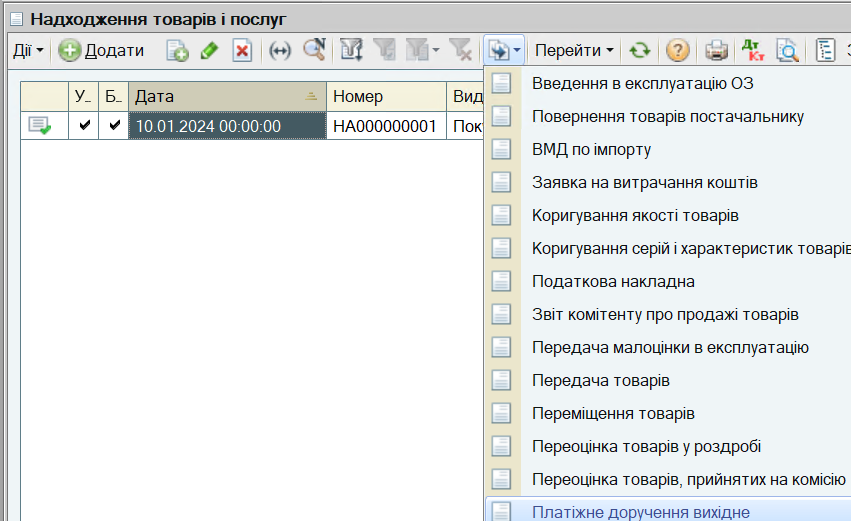
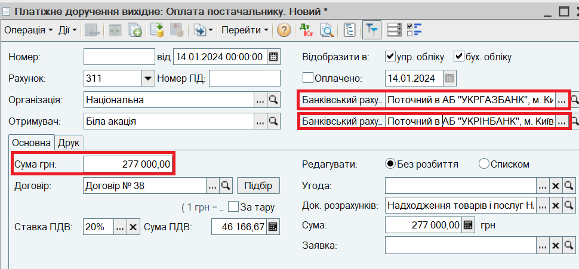
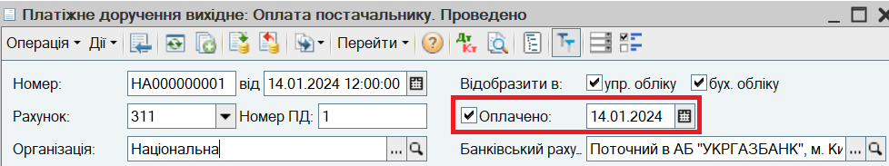

Перерахування грошових коштів постачальнику з банківського рахунка організації
Списання грошових коштів з банківського рахунку відображається документом Платіжне доручення вихідне.
1. Введіть документ Платіжне доручення вхідне на підставі документа Надходження товарів і послуг.
Для цього в списку документів Надходження товарів і послуг позиціонуйтесь на створеному раніше документі і натисніть на кнопку  (або клацніть правою кнопкою миші і в меню, що відкрилося, виберіть пункт На підставі). Виберіть в запропонованому списку рядок Платіжне доручення вихідне.
(або клацніть правою кнопкою миші і в меню, що відкрилося, виберіть пункт На підставі). Виберіть в запропонованому списку рядок Платіжне доручення вихідне.

Автоматично буде створений новий документ Платіжне доручення вихідне. В документі заповнені всі основні реквізити. Вручну можуть змінюватися:
- Банківський рахунок (організації) - за замовчуванням зазначається рахунок, зазначений як Основний в картці Організації;
- Банківський рахунок (контрагента) - заповнюється у випадку, якщо платіжне доручення буде надсилатися до банку для оплати з програми. За замовчуванням зазначається рахунок, зазначений як Основний в картці Контрагента;
- Сума - за замовчуванням зазначається сума документа Надходження товарів і послуг.

В документі не встановлено прапор Оплачено. На цьому етапі документ відображає намір списання коштів. Залишки на банківському рахунку і борг перед постачальником не змінюються.
2. Встановіть прапор Оплачено і дату фактичного списання банком грошових коштів.

ПРИМІТКА
Якщо документ створюється для формування платіжного доручення і його надсилання в банк, прапор Оплачено встановлюється після отримання виписки банку. Якщо документ формується, щоб зареєструвати вже здійснену оплату, прапор встановлюється при створенні документа. |
ПОРАДА
Ознаку оплати платіжних доручень зручно встановлювати з допомогою обробки Виписка банку. Для цього потрібно відкрити список банківських виписок (меню Документи - Грошові кошти - Банк- Виписка банку), додати у список нову виписку, у якій зазначити Організацію, Банківський рахунок и Дату оплати. Далі в формі виписки слід натиснути кнопку Заповнити. Буде відібраний список платіжних доручень, оплата яких не була відображена раніше в інформаційній базі. В списку документів потрібно відмітити прапорами оплачені платіжні доручення, відповідно до виписки банку і натиснути кнопку Виконати. Відміченим платіжним дорученням автоматично буде встановлено ознаку оплати. |
3. Натисніть кнопку ОК в нижній частині форми документа Платіжне доручення вихідне для проведення і закриття документа.
Наступний розділ: "Оформлення заявки на витрачання грошових коштів"